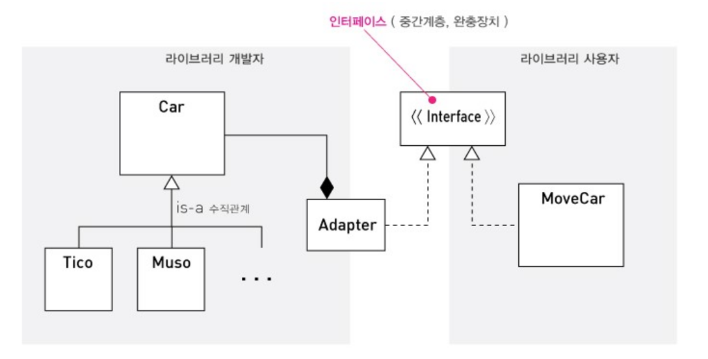
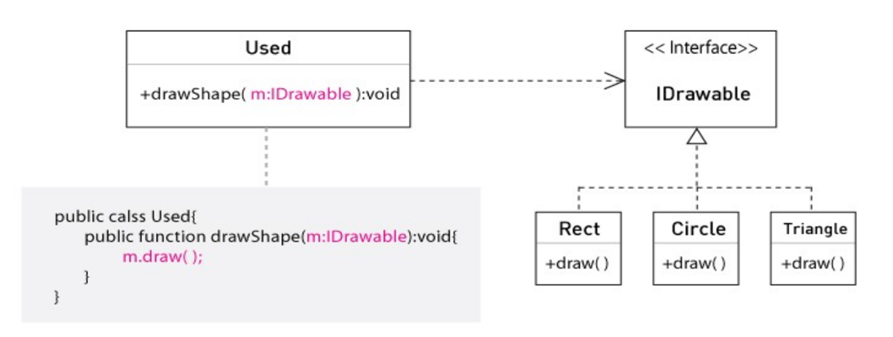

SRP - 단일 책임의 원칙
“객체는 하나의 책임만을 맡아야 한다”
- SRP는 대상이 함수나 메소드가 아닌 객체라는 점에 주목할 것
- 객체는 둘 이상의 책임을 갖지 않는 형태를 가져야 함
- 즉, 두 개 이상의 메소드가 프로퍼티를 가졌을 때 책임이 그 수만큼 늘어나게 된다면 과감하게 분리
- SRP는 하나의 객체가 두개의 책임을 가지는 것 만큼이나 두 개의 객체가 하나의 책임을 나누는 것에 주의를 기울여야 함
- 단일 요구 사항의 변경으로 둘 이상의 객체가 변경을 요하는 상황에 처한다면 책임이 나뉘었다고 판단하고, 하나의 객체가 온전히 책임을 다 가질 수 있도록 해주어야 함.
-
클래스에 있어서 책임이란 클래스에 할당된 비즈니스 로직에 대한 요구를 말한다.
File 클래스는 파일 처리라는 책임을 맡고 있고, String 클래스는 문자열 표현과 처리라는 책임을 맡고 있다.
단일 책임의 원칙은 하나의 클래스는 하나의 책임만을 맡아야 한다는 원칙이며,
이는 ‘높은 응집도와 낮은 결합도 원칙’을 지킬 수 있도록 해주는 세부 원칙이라 할 수 있다.
여기서의 책임은 순수하게 하나에 대한 책임을 이야기한다.
-
억지로 책임을 나누지 말아야 한다.
책임은 하나의 변화의 축이며, 하나의 요구 사항 변경은 하나의 책임을 직시하는 경우가 많다.
책임의 입자도가 매우 세밀하다면 변경에 대한 영역이 그만큼 커지게 된다.
변화가 예측되는 곳, 변화에 효율적으로 대응할 수 있는 크기에서 책임을 할당하는 것이 좋다.
-
하나는 온전한 하나이어야 한다.
하나의 클래스가 여러가지 책임을 맡는 것도 곤란하지만, 하나의 책임을 여러 클래스로 분할하여 할당하는 것도 곤란하다.
전자는 클래스가 여러 원인에 의해 변경되도록 하며, 후자는 하나의 원인으로 인해 여러 클래스가 변경되도록 한다.
-
확실하게 책임에 대한 구현을 은닉해 놓았다면 한 클래스에
두 개의 책임이 혼재 하더라도 변경으로 외부에 미치는 영향을 최소화 할 수 있다.
OCP - 개방 폐쇄의 원칙
“모듈은 기존 모듈의 내부 변경에는 닫혀 있어야 하고, 새로운 확장(새로운 자식 클래스 C 의 출현과 같은 )에는 열려있어야 한다.”

이 때 변경의 확산을 막아 주고 확장의 포인트가 되는 인터페이스가 새로운 요구 사항을 반영할 수 있을 만큼 견고하게 설계되어 있어야 한다.
이런 구조는 변경은 확산되지 않고, 확장에는 열려있는 것이야 말로 유연하고 변화를 수용할 수 있는 구조를 보장한다.
유연성
-
OPEN : 클래스 수직 관계(is-a)에서는 열려있어야 한다. 기반 클래스에서 파생 클래스로 확장
-
CLOSE : 클래스 수평 관계(has-a)에서는 유연해야 한다. 즉 영향을 받지 않아야 한다.
어떻게 ? 추상화 도입 > 추상클래스, 인터페이스
-
STEP 1 : 클래스 사이에서 존재하는 공통 적인 속성을 추출
-
STEP 2 : 추출된 속성은 하나의 인터페이스 또는 추상 클래스로 디자인 하기
-
STEP3 : 이렇게 디자인된 인터페이스 또는 추상 클래스 상속하기
LSP - 리스코프 치환 원칙
“기반 클래스는 파생 클래스로 대체 가능해야 한다.”

- 자식 타입들은 부모 타입들이 사용되는 곳에 대체될 수 있어야 한다.
-
LSP는 잘 디자인 된 상속에 관한 내용입니다.
부모 클래스를 상속할 때, 부모 클래스가 사용되는 것은 아무 문제 없이 자식 클래스도 사용할 수 있어야 합니다.
그렇지 않으면 상속을 잘못 사용하고 있는 것입니다.
상속 관계에서 부모와 자식 간에는 is-a 관계가 성립해야 한다.
이 말은 곧 자식이 부모의 유산 중 일부를 거부하면 안된다는 것을 의미한다.
자식의 구현이 행동하는 방식은 다를 수 있지만,
제공하는 서비스 자체가 다르다면 is-a 관계가 성립할 수 없기 때문이다.
LSP는 올바른 상속 구조가 갖추어야 할 특성을 가이드 해주며 OCP 의 기반이 된다.
ISP - 인터페이스 분리 원칙
“ 클라이언트에 특화된 여러 개의 인터페이스가 하나의 범용 인터페이스보다 낫다”
-
파생 클래스 입장에서 사용할 때 100% 구현할 수 있는 인터페이스만 사용해야 한다.
-
인터페이스를 함수를 통해 사용할 때 자신의 목적에 맞게 사용해야 한다.
상위 서비스 클래스는 클라이언트 A, B에 서비스를 제공하고 있지만 각각의 클라이언트가 서비스를 사용하는 메소드군이 서로 다르다.
이 때 클라이언트 A에 서비스 클래스의 method GroupB( ) 메소드들은 불필요한 메소드가 된다.
즉 노출되지 않아도 될 methodGroupB( ) 메소드들이 클라이언트 A에 노출됐다.
이런 경우 변경이 필요하다.
왜냐하면 클라이언트 A에 특화된 메소드들만 제공하게 되면 클라이언트 A와 methodGroupA( ) 간의
응집도는 높아지고 methodGroupB( ) 와의 결합도는 낮아지므로,
methodGroupB( )의 변경에서 클라이언트 A를 고립시킬 수 있기 때문이다.
DIP - 의존관계역전 원칙
“클라이언트는 구체 클래스가 아닌 인터페이스 추상 클래스에 의존해야 한다”
구체 클래스(구현)은 인터페이스 보다 변하기 쉽다.
따라서 클라이언트는 변화에 민감한 구체 클래스를 상대하기 보다 인터페이스를 정의 해서,
구현이 변화된다 하더라도 변화의 충격에서 자유로울 수 있도록 클라이언트를 구체 클래스와 분리 시켜야 한다.
인터페이스를 이용해서 구현의 세부 사항을 은닉할 수 있다.
인터페이스의 경우 향후 변화가 발생했을 때 객체 생성 부분만 변경해 주면 된다.
문제를 풀어봅시다.
우리는 커피를 뽑을 수 있는 기계가 필요하다.
커피 머신(CoffeMachine)에서 제공할 커피는 에스프레소(Espresso), 아메리카노(Americano), 카페라떼(CafeLatte), 카페모카(CafeMoca)를 제공한다.
커피 머신에는 각 커피 종류별 버튼(Button)을 제공한다.
커피원두를 커피 머신에 넣으면 에스프레소를 만들 수 있다.
에스프레소는 모든 커피 제품(CoffeeProduct)에 필요하다.
아래는 각 커피의 제조 방식 이다
- 에스프레소 : 에스프레소(Espresso)
- 아메리카노 : 에스프레소(Espresso) + 물(Water)
- 카페라떼 : 에스프레소(Espresso) + 우유(Milk)
- 카페모카 : 에스프레소(Espresso) + 우유(Milk) + 초콜렛(Chocolate)
홍길동이라는 손님(Client)이 박문수라는 점원(Employee)에게 에스프레소 1잔, 아메리카노 3 잔, 카페라떼 3잔, 카페모카 2잔을 주문(Order)했다.